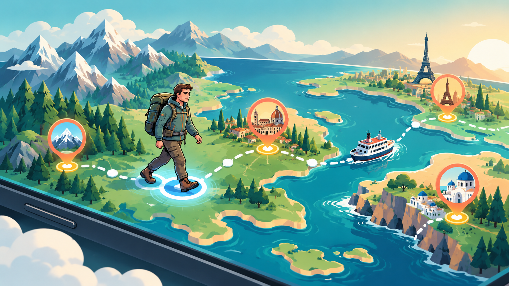

Połącz się z Health Connect
Włącz dostęp do kroków tylko do odczytu w Ustawieniach. Inne informacje o stanie zdrowia nie są potrzebne.
Dowiedz się, jak porusza się mapa, gdzie sprawdzić swoją pozycję, jak otwierają się miasta i co się stanie, gdy Twoja trasa dotrze do wody.

WalkQuest odczytuje liczbę kroków dopiero po uzyskaniu pozwolenia i konwertuje ruch na postęp na wybranej trasie.
Włącz dostęp do kroków tylko do odczytu w Ustawieniach. Inne informacje o stanie zdrowia nie są potrzebne.
Twoje zsynchronizowane kroki stają się dystansem trasy. Około 1250 kroków to jeden wirtualny kilometr przed bonusami.
Znacznik pieszego przemieszcza się pomiędzy przystankami trasy, a następny cel podróży pokazuje, ile kilometrów pozostało.
Znacznik spaceru to Twoja bieżąca obliczona pozycja. Pinezki miast pokazują miejsca docelowe na trasie.
Każdy odblokowany przystanek staje się małym przewodnikiem turystycznym, a nie tylko punktem kontrolnym.
Zobacz zlokalizowane wprowadzenie, ciekawostkę i miejsce miasta na trasie.
Otwieraj punkty orientacyjne, przeglądaj ich opisy i przejdź do Map lub Street View, jeśli są dostępne.
Karty miejskie zawierają dania regionalne i krótkie objaśnienia, co czyni je wyjątkowymi.
Zapisz miasto w swoim paszporcie podróżnym i udostępnij zebraną pieczątkę jako kartę.
Przy specjalnej bramce przesiadkowej postęp marszu zatrzymuje się na brzegu lub terminalu. Wybierz sposób rozpoczęcia przeprawy.
Przeprawa jest wliczona w cenę, nie kosztuje żadnych punktów podróży i zajmuje jeden dzień podróży.
Wydaj liczbę punktów pokazaną na bramce i poczekaj na czas przejazdu trasy.
Wolni gracze mogą ukończyć wymagane nagradzane widoki zamiast wydawać punkty.
Jeśli to możliwe, kup pasujący bilet na pociąg, prom lub samolot na jednodniową przeprawę.
Kroki pokonane w oczekiwaniu na transfer są blokowane, dzięki czemu Twój wysiłek nie zostanie stracony i możesz kontynuować podróż po przybyciu na miejsce.
Wybierz Europe Explorer, połącz kroki i zacznij chodzić.